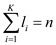
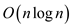
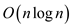

a)
Package wrapping technique can be used to compute convex hull of a set Q given by Jarvis march.
The running time of the algorithm runs in O(nh), where h is the number of vertices of CH (Q).
The total running time for K convex layer and the ith layer contains li points is, since, 
b)
Linear time reduction for sorting problem:
• The convex layers can be computed in linear time for give numbers in sorted order.
• Consider convex layer A with 3 points into set Q for each A[k]: (0, 0), (k, 0), and (0, A[k]).
• Let Q be with n convex layers and Qi represents a triangle with vertices (0, 0), (n+i-1, 0), and (0, B[i]).
• Therefore, given convex layer can be converted into its corresponding sorted value.
• Since, the lower bound is known to find convex layers; it could be easy to determine convex layers in O(n log n) time, which could be sorted in O(n log n) time.
Hence, a convex layer takes time.
MAXIMAL LAYER
In order to define the maximal layer, consider a set Q
which has n points in the given plane. It is required to
demonstrate the dominance level between any two points, that is a
point is said to
be dominant over the point if the
condition and
 is
fulfilled.
is
fulfilled.
A point in the given set Q is said to be maximal or
maximum if there does not exist any point which dominates over
that point. A set can have a number of maximal points which can be
grouped together to form a maximal layer which is illustrated as
follows-the first maximal layer is denoted as  which have
the set of maximal points.
which have
the set of maximal points.
For the value of, the
ith maximal layer can be defined as  which is
set of the maximal points which are defined as:
which is
set of the maximal points which are defined as:
a. Given that the number of the non-empty layers
present in set Q is K,  is supposed
to be the y- coordinates of the left-most point in
for.
It is also assumed that no two points in the Q have the same
x-or y- coordinate.
is supposed
to be the y- coordinates of the left-most point in
for.
It is also assumed that no two points in the Q have the same
x-or y- coordinate.
Here, it is required to show that
During the extraction of maxima layer when the layers are restored after the last iterations during the maxima layer algorithm, the y-layer order is need to be restored.
In the process, a problem with the concern of memory size is there for each layer and due to this reason it is not possible to sort the point easily.
As the maxima layer for an n-element point for the two dimensions are to be computed and have the running time of in such a way that for each layers the points are sorted in the decreasing order of their y-coordinates.
Hence the orders of the y-coordinates are as follows:
b. Given that j is the minimum index provided that the and, in the case it is supposed that and for Q’ the condition will hold which is as,
? if the equality holds then
the maximal layer of Q’ will have the condition that, a set
can have a number of maximal points which can be grouped together
to form a maximal layer which is illustrated as follows,
holds then
the maximal layer of Q’ will have the condition that, a set
can have a number of maximal points which can be grouped together
to form a maximal layer which is illustrated as follows,
The first maximal layer is denoted as which have
the set of maximal points.
For the value of, the
ith maximal layer can be defined as which is
set of the maximal points which are defined as. So, which
is same as the maximal layer except it has the condition
that is included
as its new leftmost point.
? if there is a condition that if, then the first k maximal layer of the Q’ will have the set of layer as,
This is same as the value for the maximal layer for Q;
Hence, the Q’ will have a non-empty maximal layer which have the condition of.
c . Here, it is asked to describe a
 time
algorithm for maximal layer for the given set Q which has
n-points by moving a sweep line from right to left.
time
algorithm for maximal layer for the given set Q which has
n-points by moving a sweep line from right to left.
A sweeping line algorithm also known as the plane sweep algorithm is used as an important algorithm in computational geometry. In this algorithm, it is imagined that a line would stop at some points while moving or sweeping across the plane.
Thus, in order to solve the given problem the sweeping of the
line is performed in the decreasing order of the coordinate
x. Therefore, the sorted set can be denoted by  and the
initialization will be performed as we sweep left by.
and the
initialization will be performed as we sweep left by.
This is done by the inductive method by computing the layers in
the correct way till the set and when the
set  is
considered then the layers are and then
the y coordinate in the respective layers are the highest
y coordinates.
is
considered then the layers are and then
the y coordinate in the respective layers are the highest
y coordinates.
The set is in the
layer if there is
a condition that and if
there is an existence of such k or a new layer is started
with the help of a dictionary which is dynamic in nature this is
obtained or found in the  steps
and,
steps
and,
time.d. Here, it is asked that whether there arise any difficulties or not in case of allowing input points to have the same x- or y-coordinate and also it is asked to suggest a way of resolving or sorting out these problems.
Now, as it is observed that when the input point have the same x and y coordinate then, the case arises when the layer can be obtained by performing the sweeping of the line in the decreasing order of the coordinate x.
So, it can be said that sorting is done on the basis of the
values of x coordinate of the points. And, the sorted set is
denoted by. For this
perform the initialization with the help of sweep operation left by
.
This is done by the inductive method by computing the layers in
the correct way till the set .and when
the set is
considered then the layers are and then
the y coordinate in the respective layers are the highest
y coordinates.
So, when the coordinate are same then the problem of dominance will arise and it can be solved by having the change in coordinate system.
a.
According to the given problem, user have to do the following things:
• There are two sets of  points and
user have to pair each points from one set with other set points
and a line is drawn between them.
points and
user have to pair each points from one set with other set points
and a line is drawn between them.
• A point may be a part of only one pair.
• These lines should not intersect each other.
Now find the partitioning line:
Suppose and be the two set of n points. Now, two convex hulls and are drawn corresponding to the respective n points of and.
Consider the following diagram:
Now consider the following cases:
Case 1:
There is no convex hull lies completely inside the other convex hull. These lines may be intersecting each other. This implies that a common tangent exists for the given two convex hull.
• All the other points of both the set of points lies to one side of the tangent. So, in this case the tangent is known as the partitioning line.
• The steps taken to find this common tangent is.
• As the steps taken to find the common tangent is  and to
construct the convex hull is.
and to
construct the convex hull is.
Therefore, user can find the partitioning line in steps.
Case 2:
If a convex hull lies completely inside the other convex hull, then through all points in the outer convex hull these exists a partitioning line segment. The proof for the same is as follows:
• A point  is taken
from the outer convex hull. Now, tangents are drawn from the outer
convex hull from the inner convex hull. Total steps taken in this
process is.
is taken
from the outer convex hull. Now, tangents are drawn from the outer
convex hull from the inner convex hull. Total steps taken in this
process is.
• Suppose, and
be
the tangents where,  and
denotes
the points on the insider convex hull. Suppose, the
tangent
exists in the left of the.
and
denotes
the points on the insider convex hull. Suppose, the
tangent
exists in the left of the.
• The number of points in the inner convex hull is less than or equal to the number of points in the outer convex hull to the left of the.
Now, a horizontal axis is chosen and all the points of are sorted
to the corresponding to the inner convex hull in the increasing
order of the, where, the
angle made by the horizontal axis and the line is denoted
by the .
.
It is given that all the, is sorted in an array. Now suppose that are in the sequence.
Now, check if or is a partitioning line segment. If it is not then select a point and check the following for.
At any stage suppose be the interval of the given points in which the partitioning line segment exists.
The recurrence equation for the above is given as:
Therefore, the sorting the point’s takes steps and finding through which the partitioning line passes is steps.
In the above part (a), user find the partitioning line segment in the time complexity of.
• Now, output this pair and these two points are removed from their sets. Now solve the sub problems for the given pair of two sets.
• In the worst case condition, one set pair may each consists
 points and
the other consists 0 points.
points and
the other consists 0 points.
Now, consider the following algorithm:
Algorithm:
Suppose  be the
points consists in and
be
the points consists in the set.
be the
points consists in and
be
the points consists in the set.
1. if each set contains one point each then
2. set them as a pair and exit.
3. if each set contains two points in each then
//the pair will be obtained by taking two possibilities
4. if is intersected by then
5. and
 are
the pairs
are
the pairs
6. else
7. and are the pairs
8. For the sets and , the convex hulls and will be found respectively.
9. Now, perform checking to decide is one convex hull lies totally inside the other convex
hull.
10. if one convex hull does not exists totally inside the other then
11. obtain their common tangent.
12. Suppose  be the
tangent then
be the
tangent then
13. remove and
 are
removed from their respective sets and name them as pairs.
are
removed from their respective sets and name them as pairs.
14. Now, go to step 1.
15. Suppose,  be. Suppose,
completely
lies within.
be. Suppose,
completely
lies within.
16. then sorting performed on the points of according to their angles.
17. Now obtain the weight for the two points.
18. if any of the obtained weight is zero then
19. that point forms the partitioning line segment with
20. else
21. obtain the weights of the mid-point in the interval of points.
//As given in the previous condition on weight selected the appropriate half of the
//interval to be the new interval.
22. Repeat the step 1 until the weight zero point is found.
23. Name them as the set of pair and then remove from their respective sets then
24. Go to step 1
The above algorithm takes time to pair Ghostbusters and ghosts in such a way that no streams cross.
Picking up Sticks
Consider a set of sticks which
are piled up in some configuration. Each stick is defined by its
endpoints. Each end point is an ordered triple of and
coordinates,
which implies that the end point is defined by coordinate.
In the given configuration no stick is vertical. Here, a person
wants to pick up all the sticks one at a time subjecting to the
condition which is as given below:
Condition: A person can pick up a stick only if there is no other stick on top of it.
a. Given two sticks a and b, in order to decide whether a is above, below or unrelated to b these sticks are needed to project to the plane. Based on the projection.
?If the projections of two sticks on plane do not intersect, then it can be said that they are unrelated.
? If the projections of two sticks on plane intersect, then in order to decide which of the stick is above or below, it is required to calculate the coordinate of the sticks corresponding to the intersection point. Stick having larger coordinate value will be above to other.
Procedure:
Input: Two sticks say a and b.
Output: Relation between the given two sticks that is whether a is above, below or unrelated to b.
Sticks
{
if the projection of the a andb on plane do not intersect
Then return unrelated
else
Calculate the point of intersection of the two projections. Let
say it is .
.
Calculate thecoordinate of each stick corresponding to point of intersection. Let’s say it is and
if
then return above;
else
return below;
}
b. Here, it is required to give an efficient
algorithm that determines whether it is possible to pick up all the
sticks and a legal order in which they will get picked. In order to
determine whether it is possible to pick up all the sticks, the
sticks will be arranged as Graph. Thus, a directed graph  will be
constructed having V as the set of vertices and E be
the set of the edges. Each vertices of graph
will be
constructed having V as the set of vertices and E be
the set of the edges. Each vertices of graph  represents a
stick.
represents a
stick.
Now, a directed edge between the vertices say a and b in
graph is constructed if stick a is above b. Once,
graph is constructed in the above manner it is required to run
Topological sort algorithm on .
.
Now, two cases can arise:
? If a cycle is found by Topological sort in then, it is
not possible to pick all the sticks.
? Else it is possible to pick all sticks and order of sticks will be the topological sorted order.
Topological sort: A topological sort is an order in which a starting activity depends on the completion of the other activities. That is, order of completed activities play a crucial role in deciding the order of the starting activity. It is a technique or a method of linear ordering of the vertices of a directed graph, such that if there is a directed edge xy from vertex x to vertex y, then x comes before y in the ordering.
This sorting technique is based on the strategy of Depth First Search (DFS). Consider a task that is to be performed. Then, in a directed acyclic graph (dag) the vertices of the directed graph represent the tasks and the edges represent the constraint to be performed on the task, and a topological ordering is the valid sequence of the task.
Topological sorting is only possible if the graph has no directed cycles that is, it is a directed acyclic graph. It is a ordering of vertices in a horizontal line such that all the directed edges go from left to right. In this linear ordering of vertices or nodes if any edge or set of edges direct to left then, it is not a valid solution or ordering. It is also possible for a graph to have more than one valid linear ordering of vertices for a topological sort.
For Example: Consider a directed graph given below:
In the above figure, since there is an edge from B to D and also from C to D. So B and C should be completed before the start of D. Thus, it can be said that A, B, C, D are topologically sorted. Now, also consider the node F, since, there is an edge to F from E and C therefore, C and E should be completed before the start of F. So, Topological order of the above figure or graph is as given below:
ABCDEF
Algorithm:
Input: sticks that
is
Output: Determination of the possibility of picking up all the vertices. If possible the legal order in which they should be picked up.
Picking_order()
{
for each stick 
construct a vertex for graph;
end for
//Check the relation between two sticks that is whether a stick is above, below
//or unrelated.
for each pair of
Sticks(, )
)
end for
//graph is constructed
Topological_Sort();
if cycle is found
return not possible;
else
return
Order of sticks produced by topological sort
end if
}
Hence, the algorithm that provides a legal order in which the sticks can be picked up has been described.
The convex hull of the set of point is the smallest convex polygon that contains all the points of set.
A point p is an extreme point of a convex hull if p is not an interior to any line segment connecting two points in the set.
Following diagram represent the example of convex hull.
Input point.
Output =
a.
Consider the following algorithm to compute the convex hull of all n1+n2 point.
1. Compute the vertices with minimum y-axis for both J and K
2. if
3. take the vertices with greater x-coordinate. P(i) for J, Q(m) for K
4. Construct two horizontal lines S1 for J, S2 for K which is parallel with the x- axis
5. else if P(i-1) ,P(i+1), Q(m-1), Q(m+1) lie to the same side of the line
6. user will add a side (P(i),Q(m))
7. if smaller angle is S1 to P(i+1),
8. S1 become the line (P(i), P(i+1)).
9. i=i+1,
10. S2 become the parallel line with S1 through Q(m)
11. else
12. the smaller angle is S2 to Q(m+1), S2 become the line (P(m),P(m+1)
13. m=m+1,
14. S1 become the parallel line with S2 through P(i)
15. MERGE (S1, S2)
16. return S
Analysis of Algorithm:
• In the above algorithm line is break into two parts S1 and S2. If the number of vertices in each part is greater than 1, construct the convex hull of for both S1 and S2.
• MERGE function is used to merge the both individual convex
hull into single convex hull so both part will take individually
time.
Hence, the total time complexity will be
b.
Consider the following algorithm to compute the convex hull of n point using sparse-hulled distribution.
CONVEX-HULL(S)
//for loop is used to traverse each point of convex hull
1. for i=4 to n
2. j ← Index of the point which is at the right end of CH
// find the upper tangency point
3. u = j
4. while pih4 is not tangent to CH
5. FIND HULL (A, p, r)
6. if (p-r > 3)
7.
8. FIND-HULL (A, p, m)
9. FIND-HULL (A, m+1, r)
10. MERGE-HULL (A,p,q.r)
11. i = j
12. while pihl is not tangent to CH
13. if
14. remove hi from CH
15.
16. INSERT pi in CH between hu and hi
17. return S
Analysis of Complexity:
• In the above algorithm all n points are stored in array
A. Then find the convex hull of first  point and
second point.
Finally merge the result.
point and
second point.
Finally merge the result.
•
So,
 .
.
Hence, by master theorem .